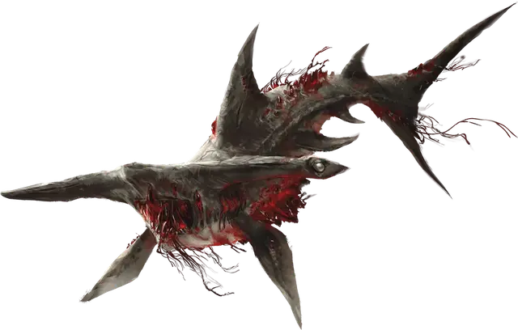

Осквернённая гигантская акула
Corrupted Giant Shark
Огромная Аберрация, без мировоззрения

Класс Доспеха 13 (природный доспех)
Хиты 126 (11к12 + 55)
Скорость 0 футов, плавая 50 футов
| мод | спас | ||
|---|---|---|---|
| СИЛ | 23 | +6 | +6 |
| ЛОВ | 11 | +0 | +0 |
| ТЕЛ | 21 | +5 | +5 |
| мод | спас | ||
|---|---|---|---|
| ИНТ | 1 | −5 | −5 |
| МДР | 10 | +0 | +0 |
| ХАР | 5 | −3 | −3 |
Навыки Восприятие +4
Чувства слепое зрение 60 футов, пассивное Восприятие 14
Опасность 9 (5000 опыта)
Бонус мастерства +4
Особенности
Психический водоворот. Любое существо, которое начинает свой ход в пределах 15 футов от акулы, должно совершить спасбросок Мудрости Сл 17, иначе получит 11 (2к10) урона психической энергией.
Регенерация. Акула восстанавливает 10 хитов в начале своего хода. Если акула получает урон излучением или урон от критического попадания, эта особенность не действует в начале следующего хода акулы. Акула умирает только если начинает свой ход с 0 хитов и не может регенерировать.
Подводное дыхание. Акула может дышать только под водой.
Действия
Укус. Рукопашная атака оружием: +10 к попаданию (с преимуществом, если целью является существо, у которого хиты ниже максимума), досягаемость 5 футов, одна цель. Попадание: 22 (3к10 + 6) колющего урона, и если целью является существо, оно должно преуспеть в спасброске Харизмы Сл 17, иначе получит 1 степень истощения.
Описание
В дополнение к своему злобному укусу, эта гигантская акула излучает психическую ауру, которая вызывает болезненные психические расстройства у других существ поблизости. Кристаллы, которые пронизывают тело акулы, позволяют ей регенерировать, и только энергия излучения или особо разрушительные атаки могут преодолеть эту неестественную защиту.